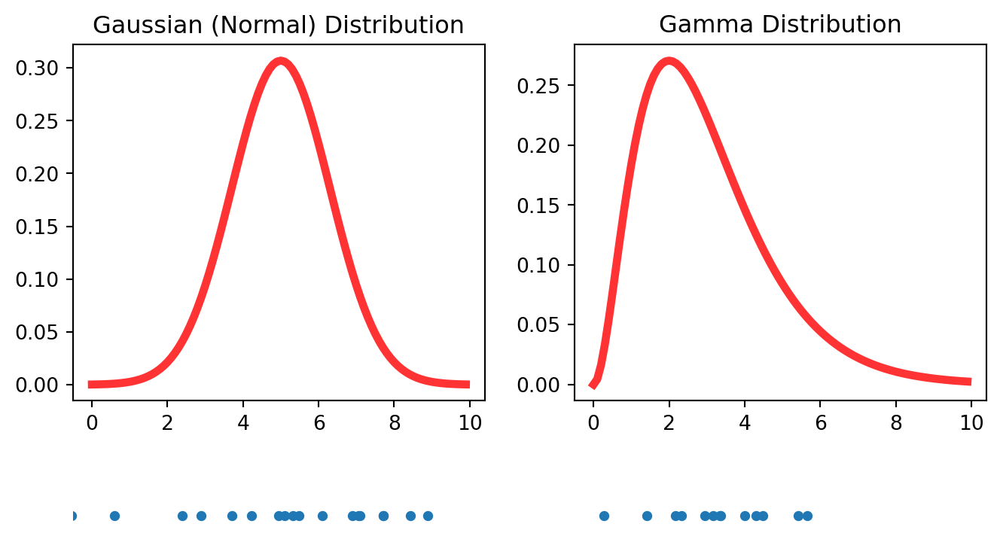
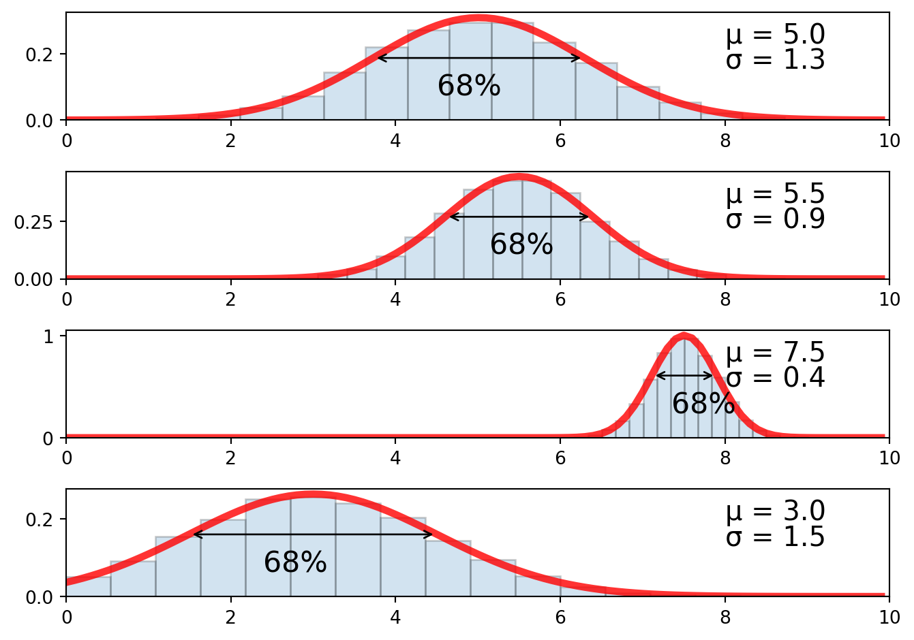
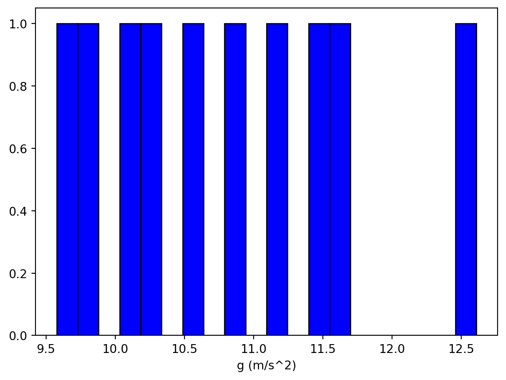
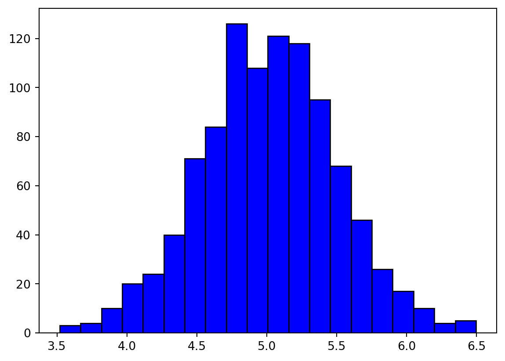

Lab 4: Statistical Interpretation of Uncertainty
Name:
Skills
- Use Python to plot statistical distributions and histograms.
- Use Python to calculate the mean, standard deviation, and standard deviation of the mean for a data set.
- Use Python to read data from a file.
- Explain the difference between standard deviation and standard deviation of the mean.
- Use statistical information to report uncertainties.
Background Information
Statistical Distributions
We’ve learned that all measurements have uncertainties associated with them. This means that when a measurement (or experiment) is repeated, the obtained value is different every time. Statisticians call this a random variable, but the numbers aren’t as random as you might think. You might think that the word random means that the value can be anything; any number at all from \(-\infty \rightarrow \infty\) but that’s not what we typically mean. Instead, random in this context means a number that is random but subject to some probability rules.
The rules for deciding what random numbers are allowed are contained in a mathematical function called a probability distribution. The Gaussian (or Normal) distribution and Gamma distributions (pictured below) are two common distributions . (Students will no doubt be familiar with the term “bell curve”.)
The numbers on the horizontal axis are the possible random numbers and the height of the function indicates the probabilities. For example, for the Gaussian distribution numbers near 5 will be more likely to appear than numbers much greater or less than 5. Conversely, numbers greater than 8 and less than 2 will be quite unlikely to occur. Numbers between 6 and 8 (or 2 and 4) are less likely than numbers between 4 and 6 but more likely than numbers greater than 8 (or less than 2). You get the idea. The gamma distribution isn’t symmetric like the Gaussian. Numbers far above the peak location are more likely than numbers far below the peak location. The lower pane in the figure above is 20 random numbers selected (drawn) from this distribution.
The mathematical expression for the Normal distribution is given by
\[ f(x) = {1\over \sigma \sqrt{2 \pi}} e^{-(x- \mu)^2 \over 2 \sigma^2} \]
The shape and location of this function are controlled by two numbers: the mean (\(\mu\)) and standard deviation (\(\sigma\)). The mean controls where the peak of the distribution is located and the standard deviation controls the width of the peak. One feature of the normal distribution is that 68% of the data lies between \(\mu - \sigma\) and \(\mu + \sigma\). For this reason we often assign the mean to be the expected value and the standard deviation to be the associated uncertainty.

So what does this have to do with uncertainties in scientific experiments? When a scientist performs measurements and gathers data, they are gathering samples from a statistical distribution, usually a Gaussian. This idea is crucial to understanding how statistical distributions describe uncertainty. The challenge is figuring out which Gaussian distribution the data came from.
Histograms
When an experiment can be repeated over and over again under identical physical conditions, the data can be visualized using something called a histogram. To construct a histogram, the range of plausible measurement values is first divided into bins. Each measurement is then assigned a bin and the total number of measurements in each bin is updated. The number of measurements in all of the bins can be visualized by plotting a bar for each bin, with the height of the bar indicating how many measurements were in the bin. Below is a histogram for 10 repetitions of an experiment to determine the acceleration due to gravity.

Ten data points isn’t a lot but you can probably start to form a reasonable guess for the mean(expected value) and standard deviation(uncertainty) of the underlying distribution. As more data is gathered, your estimates for \(\mu\) and \(\sigma\) will update and your confidence in those values increases with it. (Illustrated in the figure below)
The location of the distribution’s peak would be the expected value and the spread of the peak (at about half the max height) would be the associated uncertainty.
Mean
The peak of the distribution is located at the mean (\(\mu\)) and can be calculated from a data set using the following expression
\[ \begin{align*} \mu &= {x_1 + x_2 + \dots\over N}\\ &= {1\over N}\sum_{i=1}^N \\ \end{align*} \]
The mean should be used as the expected value when reporting results. The uncertainty in the mean will decrease as more measurements are added to the data set.
Standard Deviation
The standard deviation indicates the spread in the distribution and can be calculated using the following expression \[ \sigma = \sqrt{ \sum_{i=1}^N (x_i - \mu)^2 \over N} \]
The standard deviation gives the uncertainty in a single measurement. If the experiment were repeated again, under identical conditions, the standard deviation would be the uncertainty associated with any single measurement. Just as with the mean, the standard deviation becomes more reliable (smaller uncertainty) as the size of the data set increases.
Where did this expression for the standard deviation come from? A full derivation won’t be shown here (see me if you’d like more information), but some brief motivation for why this expression is a measure of the spread in the data will be given. First notice the quantity \(x_i - \mu\), which is a measure of how far away each data point is from the mean. Summing up these differences would be some indication to the amount of spread in the data. However, since some of these differences will be positive and some negative, summing them could result in zero even when the spread in the data is not zero. Instead the square of the differences is summed: \(\sum_{i=1}^N (x_i - \mu)^2\) and then divided by \(N\) to get an average.
\[
{1\over N} \sum_{i=1}^N (x_i - \mu)^2
\]
The final expression is the square root of this expression:
\[ \sigma = \sqrt{{1\over N} \sum_{i=1}^N (x_i - \mu)^2} \]
Standard Deviation of the Mean
Notice that the standard deviation was not assigned to be the uncertainty in the mean. The reasoning for this is subtle. The shape of the histogram improves with each data point added and therefore the uncertainty associated with the mean should decrease also. However, the standard deviation does not decrease as \(N\) increases. Even though \(N\) is on the denominator of the expression, as \(N\) increases so too does the numerator. Hence, both the numerator and denominator increase together.
The uncertainty in the mean is given by
\[ \sigma_N = {\sigma \over \sqrt{N}} \]
which decreases as more data points are added. This is the quantity that we should assign to be the uncertainty of the mean.
Comparing Results
In lab #1, the success of an experiment was decided by comparing the fractional uncertainty to the percent error. If the fractional uncertainty was bigger than the percent error then the experiment was judged to be a success. While this criteria isn’t wrong, it doesn’t tell us how good or bad the agreement is and it also doesn’t provide any boundary between acceptable and unacceptable results. We are now in a position to describe a more robust criteria for judging success.
Recall that every time an experiment is performed the measurements gathered are random draws from a distribution. This distribution is assumed to be centered at the expected value (\(x_e\)). If the results of the experiment (usually the mean) are too far away from the expected mean, the probability that the measurements were random draws from the assumed distribution is so small that we lose confidence in that assumption. The figure below illustrates this idea. The red curve is the assumed distribution centered at the expected value and the blue bars indicate the measurements during the experiment. The mean of these results is indicated by the red dashed curve and the expected mean is indicated by the green dashed curve.
To determine the probability that these data points came from the assumed distribution we first calculate the quantity
\[ t = {|x_b - x_e|\over \sigma_n}\]
which measures how many standard deviations of the mean the measured result differs from the expected result. Here \(x_b\) is the best result from your experiment(usually the mean of your dataset), \(x_e\) is the expected value, and \(\sigma_n\) is the standard deviation of the mean.
For values of \(t <1\) the experiment is probably a success and for \(t \gg 1\) the experiment probably isn’t a success. But what about intermediate values? It would be nice to make a more probabilistic statement about the success of our experiment. Something like, “The probability that the results of our experiment were drawn from a distribution with the expected result as the mean is 90%”
We can use Python to answer this question using the code given below.
from scipy.stats import ttest_1samp
results = [1.64,1.57,1.72,1.55,1.68,1.62,1.70,1.59]
expected_value = 1.67
P = ttest_1samp(results,expected_value)
print(P.pvalue)0.14392654580468714The result is called a p-value and in this case it is equal to \(0.144\) or \(14.4\%\). This means that the probability that \(x_b\) was a random draw from the assumed distribution(centered at \(x_e\)) is \(14.4\%\)
The boundary between acceptable and unacceptable depends on the level below which we judge a discrepancy to be unreasonably probable. This really is a matter of opinion but often a community of people will agree on a certain level. Many scientists regard \(5\%\) to be the appropriate boundary and if the p-value is smaller than \(5\%\) the discrepancy is deemed significant. In other words, the probability of obtaining the result as a random draw from a distribution centered at the expected value is so small that it probably didn’t. In this case, the scientist ought to look for mistakes in the experimental setup.
On the other hand, if the p-value is above the boundary, the discrepancy is deemed insignificant and the experiment is deemed a success. Note that p-values do not confirm the hypothesis, but just fail to reject it.
A p-value for two data sets can be calculated to see if their distributions are statistically the same. As before the relevant quantity is
\[ t = {|x_b - x_e|\over \sigma_\text{joint}}\]
but the standard deviation is now given by
\[\sigma_\text{joint} = \sqrt{{N_1 + N_2\over N_1 N_2} \cdot {(N_1 - 1)\sigma_1^2 + (N_2 - 1)\sigma_2^2 \over N_1 + N_2-2}}\]
Fortunately, python can do all of these calculations for us. For example, if two groups of students measure the time it takes for a ball to fall \(3.00\) m, you could use the code below to calculate a p-value.
from scipy.stats import ttest_ind
dataOne = [0.75,0.74,0.79,0.76,0.77,0.73,0.74,0.78,0.76,0.75]
dataTwo = [0.81,0.80,0.79,0.76,0.77,0.80]
P = ttest_ind(dataOne,dataTwo)
print(f"The p-value for these two data sets is {P.pvalue:8.4f} = {P.pvalue*100:4.2f} %.")The p-value for these two data sets is 0.0067 = 0.67 %.Since the p-value is less than the \(5\%\) boundary we conclude that the results from these two experiments differ significantly.
Python Skills
Plotting Histograms
To plot a histogram in Python you should use the pyplot.hist(data) function and pass your data set into the function. There are several optional arguments to the hist function that can help customize the appearance. A few of the more important ones are given in the table below
| Optional Argument | Description | Example |
|---|---|---|
| bins | Specify how many bins should be displayed. | bins = 20 |
| color | Specify what color the bars should be. | color = “blue” |
| edgecolor | Specify the color of the edge of the bars. | edgecolor = “red” |
Some example code for building a histogram is given below.
import matplotlib.pyplot as plt
import numpy.random as rand
data = rand.normal(5,.5,1000) # Dummy data just for this example.
ax = plt.axes()
ax.hist(data,bins = 20,color = 'blue',edgecolor = 'black')
plt.show()
Plotting functions
Plotting a function in Python can be accomplished by following these steps:
- Build a list of x value (horizontal axis).
- Calculate the function value for every x value.
- Use
pyplot.plot(x,y)to plot the x-y pairs. - Use
pyplot.show()to display the plot.
Several options to the pyplot.plot() function will allow you to customize the plot. Some common ones are listed below:
linestyle: specify what the line representing the function looks like.color: Specify the color of the line representing the function.linewidth: Specify the thickness of the line representing the function.
The functions ax.set_xlabel(), ax.set_ylabel(), and ax.set_title() can also be used to specify axes labels and a plot title. An example is given in the code cell below.
import matplotlib.pyplot as plt
import numpy as np
x = np.arange(0,2 * np.pi,0.1) # Step 1
y = np.sin(x) # Step 2
ax = plt.axes()
ax.plot(x,y,linewidth = 4,color = 'black',linestyle = "--") # Step 3
ax.set_xlabel("x")
ax.set_ylabel("f(x)")
ax.set_title("f vs x")
plt.show() # Step 4Reading Data Files
In this lab we will be reading in a CSV file, which is a file where a comma is used to separate the numbers. The function np.genfromtxt() will read a file like this and put it into a numpy array for later use. The genfromtxt function requires only one argument (the file name) with another optional argument (delimiter) that is typically included to specify the character used to separate the data. Below is an example to read a hypothetical file named squares.csv file (comma separated values).
from numpy import genfromtxt
data = genfromtxt('squares.csv',delimiter = ",")
print(data)Notice that the data was read into a NumPy array (2D in this case because there were two columns of data), which means that we can easily slice off the individual columns if needed.
from numpy import genfromtxt
data = genfromtxt('squares.csv',delimiter = ",")
numbers = data[:,0]
squares = data[:,1]Other optional arguments that can be used with the genfromtxt function are given in the table below:
| Argument | Description |
|---|---|
delimiter |
The string used to separate value. By default, whitespace acts as the delimiter. |
skip_header |
The number of lines to skip at the beginning of a file. |
skip_footer |
The number of lines to skip at the end of a file. |
usecols |
Specify which columns to read with 0 being the first. For example, usecols = (0,2,5) will read the 1st, 3rd, and 6th columns. |
comments |
The character used to indicate the start of a comment. Lines beginning with this character will be discarded. |
Important: If the file you are reading is not located in the same directory as this jupyter notebook, genfromtxt will not be able to find the file. In this case, you have two options: 1- copy the file from its current location into the directory where this jupyter notebook is located, or 2- Use python’s os module to change your working directory to where the file is located.
If you choose the second option you’ll need to familiarize yourself with the os module, which can perform standard operations on the files and folders on your computer. When opening files from a python script, the default search path is the directory where the current file is located. If you want to open files located in other directories, you may need to use the os module to navigate there first. The following functions are the most commonly used ones
| Function | Description |
|---|---|
getcwd() |
Short for get current working directory. Returns a string of the current directory. |
chdir(path) |
Change the current working direction to be at path. |
listdir() |
List all of the files and folders in the current working directory. |
mkdir(path) |
Make an new directory at location path. |
In the cell below, we show the usage of these functions.
from os import getcwd,chdir,listdir
currentdir = getcwd()
myfiles = listdir()
print(currentdir)
print(myfiles)
#chdir(/path/to/new/directory) Activity I Pendulum Period (33 points)
Equipment needed
- 1.5-meter-long pendulum.
- Stopwatch (the one on your phone will do)
Goal (Overview)
Each student will measure the period of a 1.5-meter-long pendulum 10 times. This will result in a set of ~150 data points for the whole class. We will then calculate the acceleration due to gravity for each measurement and calculate the i) mean, ii) standard deviation, and iii) standard deviation of the mean and use these results to report an appropriate uncertainty.
Procedure
- A pendulum that is 1.5 meters long will be set up at the front of the class. Each person should measure the period of the pendulum with a stopwatch 10 times. Data should be recorded to the nearest 0.01 s. For the best results try to keep the pendulum’s amplitude consistent for all of the measurements, even by restarting as necessary. The amplitude should be relatively small (less than about \(10^\circ\)). The pendulum should be swinging (rather than at rest) when the time measurement begins.
- Record your 10 measurements in the google sheets link provided below.
- Once everyone has collected their measurements someone needs to move all of the data into a single column. Then download the file to your computer, saving it as a .csv file. Then use the
np.loadtxt()function to read this data into Python. Do this on line 7 of the code cell below. (Remember: The file must be located in the same directory as this Jupyter notebook.) - The acceleration due to gravity can be calculated from \[ g = {4 \pi^2 L \over T^2}\] On line 9 of the code cell below calculate the acceleration due to gravity for each period measurement in the data set. To include \(\pi\) in your calculation use
np.pi. - Use the equations given in the reading above to calculate the mean, standard deviation, and standard deviation of the mean. Perform these calculations on lines 10, 11, and 12 of the code cell below. Use
np.sum()to perform summations andnp.sqrt()to perform square root functions. - On lines 14,15, and 16 in the code cell below use the functions
stats.mean()andstats.stdev()to calculate the mean, standard deviation, and standard deviation of the mean.
- Construct a dataframe of data with the period located in the first column and the values of g in the second column.
- A statistical analysis of the data can be generated using
dataframe.describe(), which creates a new dataframe containing often used statistics. Do this on line.
- Add a formatted print statement to report an appropriate value for \(g\) with its uncertainty.
- Plot a histogram of the g values.
- The normal distribution is given by \[ N(x) = {1\over \sigma \sqrt{2 \pi}} e^{-(x- \mu)^2\over 2 \sigma^2}\]. Plot this distribution on top of the histogram. Verify that the limiting distribution matches the histogram.
- Calculate the p-value for this dataset using \(g= 9.8\) as the expected value. State whether the deviation of your experimental results are significant enough (at the \(5\%\) level ) to reject the experiment. Do this on line 22 in the code cell below.
import numpy as np
import statistics as stats
import math as mt
from scipy.stats import ttest_1samp
%matplotlib inline
T = # Line 7
N = len(T) # Find the number of data points.
g = # Line 9
meanG = # Line 10
stdG = # Line 11
stdMeanG = # Line 12
μ = # Line 14
σ = # Line 15
σ_μ = # Line 16
df = # Construct a dataframe with periods in the first column and g-values in the second. (Line 18)
display(df)
summary = #Construct a summary dataframe containing often-used statistics (Line 20)
display(summary)
p_value = # Line 22
# Plot the histogram and Normal distribution below.Activity II - Radioactivity (33 points)
Equipment needed
Goal (Overview)
We will use the electronic radiation monitor to measure the number of decays for a radiocative sample. We will calculate the mean and standard deviation of the data and make a histogram of the data. The Poisson distribution will be plotted on top of the histogram to show it as the limiting distribution.
Procedure
- Using the Vernier Radiation Monitor, measure the decays of a radioactive sample. Below you will find the instructions for setting up the Vernier Radiation Monitor to your laptop. Use 10-second intervals and make 100 measurements.
- Copy the data from Logger Pro to an Excel spreadsheet and save the worksheet.(The worksheet should have only one column of data. Don’t include the time data in the Excel worksheet.)
- Use the equation above for the mean (\(\mu\)) to calculate the mean of the data and the equation below to calculate the standard deviation of the data. \[\sigma = \sqrt{\mu}\]. Perform these calculations on lines 7 and 8 in the code cell below.
- Add a formatted print statement to report the appropriate count number with its associated uncertainty.
- One line 11 of the code cell below, produce a histogram just as we did together in activity I. Choose
bins =so that the histogram displays a sufficient amount of detail. - The limiting distribution for this kind of data is called a Poisson distribution (equation given below). It is only defined for integer values of the argument and it is hard to plot using standard plotting techniques. I have provided the code to plot this function in the code cell below. You may have to modify the numbers on line 14 to plot over the appropriate range. \[P(x) = e^{-\mu} {\mu^x \over x!} \]
Instructions for using the Vernier Radiation Monitor:
- Connect the Vernier Radiation Monitor to the DIG 1 port of the LabQuest Mini.
- Connect the USB cord from the LabQuest Mini to your laptop.
- Within the LoggerPro software, do the following:
- Select Experiment -> Data Collection and change the duration to 1000 seconds.

from scipy.stats import poisson,norm
from numpy import arange
from matplotlib import pyplot as plt
data = #Load the data from file (Line 5)
μ = # Calculate mean (Line 7)
σ = # Calculate standard deviation (Line 8)
# Construct Histogram (Line 11)
dist = poisson(μ)
x = arange(0,40) # Line 14: May have to modify these numbers.
ax.plot(x,dist.pmf(x))
plt.show()Activity III - Projectile Range (33 points)
Goal (Overview)
This activity is identical in nature to Activity I. Instead of measuring the period of a pendulum, we will measure the range of a projectile. The analysis of the data will be very similar to that performed in Activity I.
Setup
- As a class, pick some launch conditions. Thes must include the launch angle, launch power setting, and initial height. Pick one person to write these launch conditions on the whiteboard at the front of the class.
- Setup the cannon in a location where everyone in the class can access it and perform measurements.
Procedure
- Using the launch conditions chosen in step 1, predict the range of the steel ball. Perform the calculations in the code cell below.
- Using the projectile launcher, fire a steel ball 10 times per student and measure the range in meters.
- Again, we will pool our data together as a class to increase the size of the dataset. Therefore, it is very important that every student launches under the same conditions and every students’ measurements are free of bias. Add your data to the Google sheets document linked below.
- When all the data is collected, have Python read the data set using
np.genfromtxt()just as you did in activity I. - Calculate the mean, standard deviation, and standard deviation of the mean using your preferred calculation method. (Either with
stats.mean()andstats.stdev(),using the equations given above, or using a python dataframe.) - Plot a histogram of the data. Choose
bins =appropriately so the histogram displays with sufficient detail. - Plot the normal distribution on top to verify that it is the limiting distribution.
- Add a formatted print statement to report the particle’s range with its associated uncertainty.
- Calculate the p-value for your data set using the predicted range from part 1 as your expected value. State whether the deviation of your experimental results are significant enough (at the \(5\%\) level ) to reject the experiment.
No template code cell will be provided for this activity (hopefully you are feeling more and more comfortable writing simple code on your own), but you can copy/paste from previous activities if needed.
# Put code here